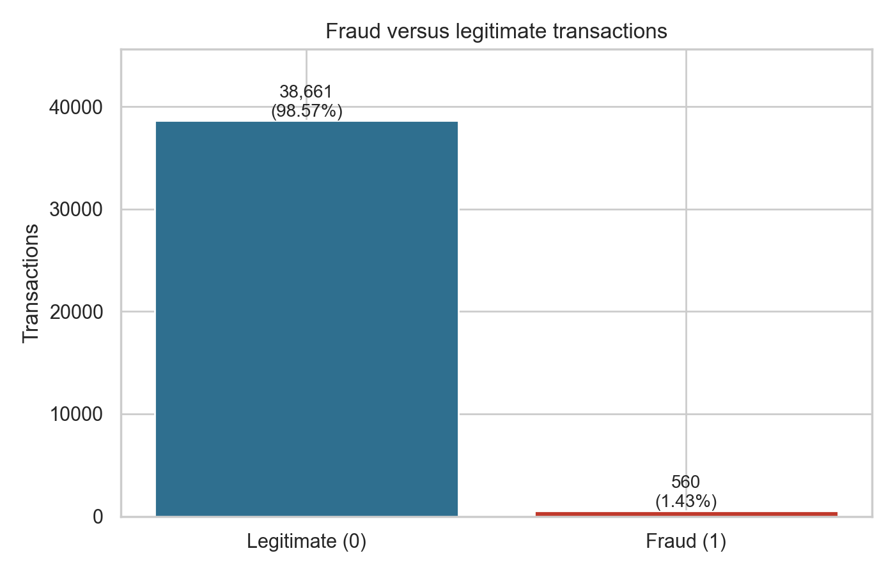
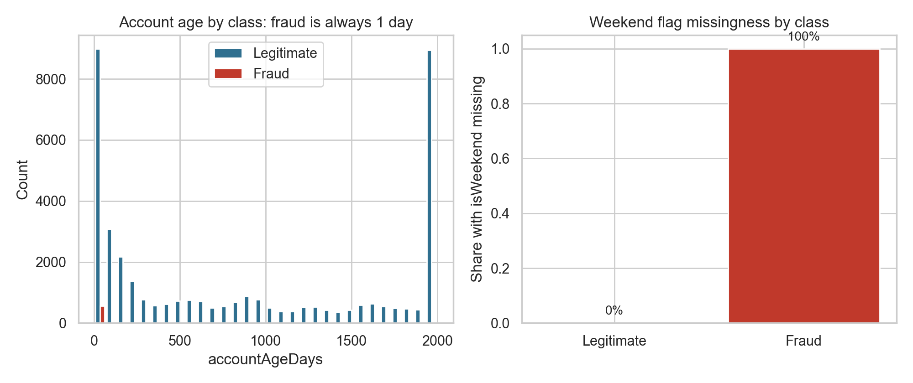
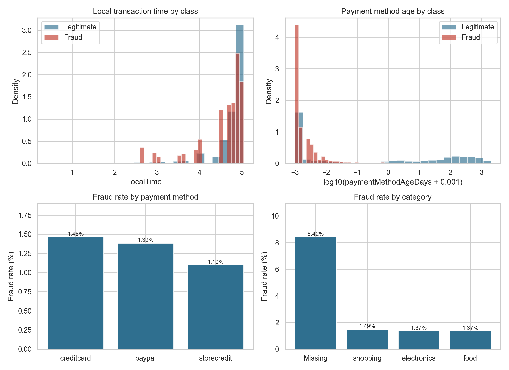
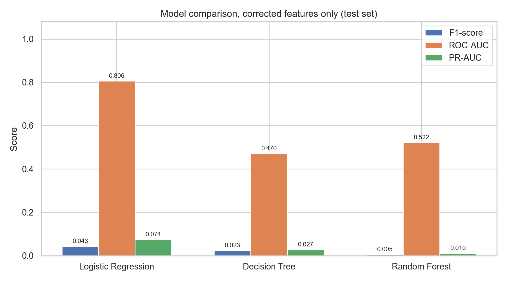
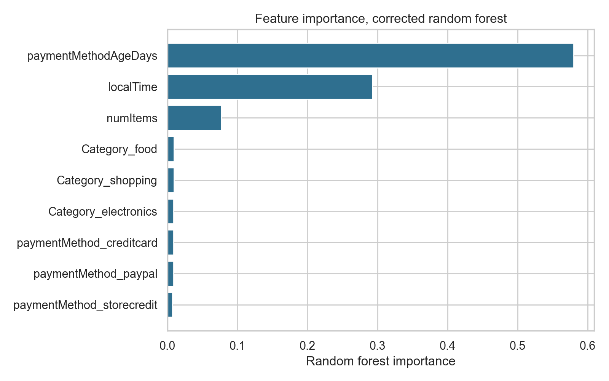
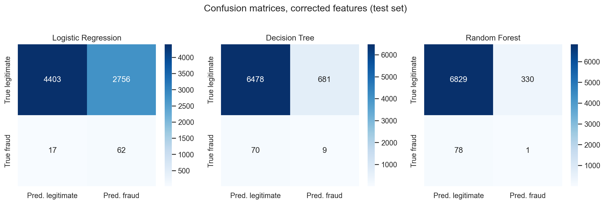
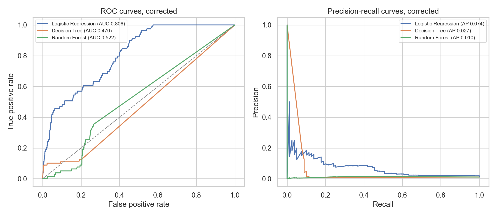

Independent project · Leakage and data quality study
Machine Learning for Transaction Fraud Analysis
An audit first study of payment fraud classification. The dataset was checked for target leakage and duplicate rows before any model result was trusted. Three baseline classifiers were then compared on features that do not reveal the label.
The file is not described here as verified real world financial transactions. Its provenance is weak, and the fraud rows follow exact rules. The corrected models are baseline results on this file. They are not production ready and they do not show real world fraud detection performance.
Overview
The original file has 39,221 rows and 8 columns: 7 predictors and a binary label. There are 38,661 legitimate records (98.57 percent) and 560 fraud records (1.43 percent). At that prevalence, accuracy alone is a poor guide. A rule that labels every row legitimate scores about 98.57 percent accuracy and detects no fraud.
The first run, using all seven predictors, gives the decision tree and random forest perfect scores. Those scores are an artefact. Two columns separate the classes by construction, and many rows are exact copies. After those columns are removed and duplicates are dropped before splitting, no model performs usefully at the default threshold. That corrected result is the result reported on this page.
Dataset source and provenance
The source is the Kaggle dataset Payment Fraud: Empowering Financial Security by Younus Mohamed. The file used is payment_fraud.csv, with 39,221 rows and 8 columns. The Kaggle dataset card states 38,662 rows, which does not match the CSV. The CSV count is used here.
Licence statements conflict. The Kaggle page sidebar lists CC BY-NC-SA 4.0, while the README inside the download lists CC BY-SA 4.0. This project follows the more restrictive CC BY-NC-SA 4.0 terms and gives attribution to the dataset author. The raw CSV is not redistributed on this site or in the source download.
The uploader does not document the data as synthetic and gives no collection method or citation. The file shows strong signs of artificial generation or augmentation: fraud rows follow exact rules, the local time field takes only 25 distinct values, and many rows are exact duplicates. It should not be described as real transaction data. The reference repository that pointed to this dataset has no licence file, so none of its code was copied. This implementation was written independently.
Preprocessing and cleaning
- Exact duplicate rows were counted and, in the corrected run, dropped before the train and test split. There are 3,033 duplicate rows beyond the first copy, leaving 36,188 unique rows.
- Of the 560 fraud rows, 164 are exact copies of other fraud rows. The corrected run therefore models 396 unique fraud rows.
- Missing values are limited. Category is missing in 95 rows and isWeekend is missing in 560 rows. All other columns have no missing values.
- Imputation, one hot encoding, and scaling are fitted inside scikit-learn pipelines on training data only.
- The split is stratified 80/20 with
random_state=42. Each model usesclass_weightset to balanced because fraud is only 1.43 percent of rows. The decision threshold is the default 0.5. No hyperparameter tuning was done.
The reference notebook had separate method problems: the scaler was fitted on the full dataset before the split, one encoder object was reused, and missing values were filled before splitting. Those issues are secondary here. Even with a clean pipeline, the tree models score perfectly because the leakage is in the columns themselves.
Exploratory analysis and class imbalance
Fraud is rare in this file: 560 of 39,221 records. Precision, recall, F1, ROC-AUC, and PR-AUC are therefore reported together. PR-AUC is low in the corrected run, which is expected at low prevalence and also reflects weak ranking.
The transaction pattern charts describe this file only. Fraud rates by payment method are close: 1.46 percent for credit card, 1.39 percent for PayPal, and 1.10 percent for store credit. By category, the missing category group has a fraud rate of 8.42 percent, while shopping, electronics, and food are each near 1.4 percent. There is no transaction amount, no merchant or account history, and no time ordering in this file.
Data leakage investigation
isWeekendis missing for every fraud row and for no legitimate row. Its missingness indicator alone perfectly encodes the target.accountAgeDaysequals 1 for every fraud row, while the minimum for legitimate rows is 2. A single split on this column separates the classes perfectly.- Exact duplicates create a second problem. A random split can place copies of the same row in both train and test sets, which flatters the model.
paymentMethodAgeDaysis below 1 day for every fraud row but also for many legitimate rows. It is kept in the corrected run and removed in a sensitivity run, because it may also be part of how the fraud rows were generated.
As found run, diagnostic only
With all seven predictors and no deduplication, the decision tree and random forest score 1.0000 on accuracy, precision, recall, F1, ROC-AUC, and PR-AUC. Logistic regression scores ROC-AUC 0.9876 and PR-AUC 0.4244, with recall of 1.0000 and precision of 0.1313. The perfect tree scores are misleading. They show that the models can read columns that reveal the label. They are not evidence of real world fraud detection performance and they should not be quoted as model performance.
Corrected model performance
The corrected run removes accountAgeDays and isWeekend and drops exact duplicates before splitting. It models 36,188 rows, with 28,950 training rows and 7,238 test rows. The test set has 79 fraud records and 7,159 legitimate records.
| Model | Accuracy | Precision | Recall | F1 | ROC-AUC | PR-AUC | TN | FP | FN | TP |
|---|---|---|---|---|---|---|---|---|---|---|
| Logistic Regression | 0.6169 | 0.0220 | 0.7848 | 0.0428 | 0.8058 | 0.0740 | 4,403 | 2,756 | 17 | 62 |
| Decision Tree | 0.8962 | 0.0130 | 0.1139 | 0.0234 | 0.4704 | 0.0271 | 6,478 | 681 | 70 | 9 |
| Random Forest | 0.9436 | 0.0030 | 0.0127 | 0.0049 | 0.5216 | 0.0104 | 6,829 | 330 | 78 | 1 |
Logistic regression ranks cases better than the trees on ROC-AUC (0.8058), but its precision at the default threshold is 0.0220. Most of its fraud alerts are false alarms: 2,756 false positives against 62 true positives. The decision tree and random forest rank cases close to chance in the corrected run, with ROC-AUC of 0.4704 and 0.5216. The random forest finds only 1 of the 79 fraud records at the default threshold. The best corrected F1 score is 0.0428.
Sensitivity without paymentMethodAgeDays
Removing paymentMethodAgeDays as well lowers logistic regression ROC-AUC from 0.8058 to 0.6477 and PR-AUC from 0.0740 to 0.0304. Decision tree ROC-AUC falls to 0.4480 and random forest ROC-AUC falls to 0.4340. The remaining signal therefore depends heavily on paymentMethodAgeDays. In the corrected run the random forest still gives that column the highest importance, at 0.580, followed by local time at 0.293. Importance alone is not evidence of useful performance, since the forest ranking is close to chance.
Visualizations
These seven figures were generated by the analysis. The model charts in this section show the corrected run, unless the caption says otherwise.







Limitations and conclusions
- Provenance is weak: no documented collection method, no citation, a row count that does not match the dataset card, and inconsistent licence statements on the Kaggle page.
- The fraud rows appear to have been generated by simple rules, so model scores do not transfer to real payment systems.
- Only seven predictors are available. There is no transaction amount, no merchant or account history, and no time ordering, so no temporal validation was possible.
- A single stratified split was used. Results would vary with other splits. No hyperparameter tuning was done, by design, to keep the comparison simple.
- The corrected run should be read as a leakage and data quality study with baseline models, not as a deployable fraud detector.
The value of this project is the audit. Perfect scores were a warning sign, not a result. Removing two columns that reveal the label and dropping duplicate rows changed the decision tree and random forest from perfect scores to near chance ranking. What signal remains depends heavily on one column, paymentMethodAgeDays, which may itself be part of how the fraud rows were generated. On this evidence, the file cannot support claims about detecting real payment fraud.
The downloadable archive contains the Python implementation, tests, requirements, documentation, figures, and machine readable results. It does not contain the raw transaction CSV. Dataset attribution and the licence note above apply to reuse of the data and figures.